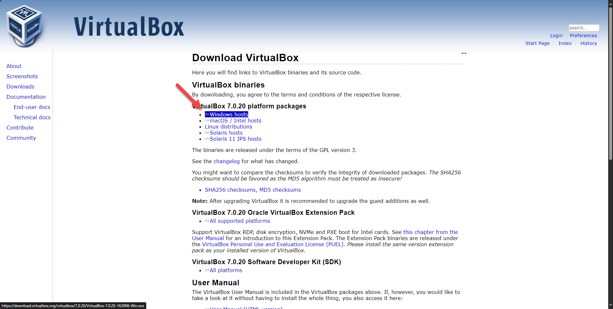
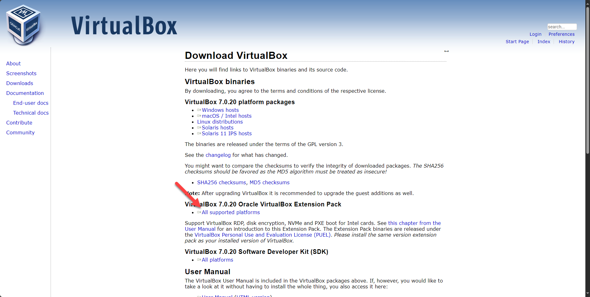

Op de laptop waarop je werkt laat je een tweede computer draaien. Je maakt in VirtualBox
een virtuele machine aan, zet er Ubuntu Linux op en stelt haar daarna af zodat ze vlot werkt. In de
industrie draait op die manier een hele rij servers op één stuk hardware.
Studiemateriaal
Meebrengen naar het labo
Een laptop met minstens 8 GB werkgeheugen en 30 GB vrije schijfruimte
Als je geen netwerkaansluiting op je laptop hebt breng dan, als dat kan, een
netwerkdongle mee
Verbind je laptop bedraad met het netwerk
De drie downloads hieronder zijn samen enkele gigabytes groot. Over de kabel gaat dat sneller dan
over wifi, en de installatie loopt minder vaak vast.
Zelf te downloaden
Ubuntu Linux, de desktopversie voor amd64, te downloaden via
ubuntu.com. Neem
een LTS-versie: die krijgt vijf jaar updates. Vraagt de site je e-mailadres, dan mag je dat
overslaan; de download start vanzelf.
Oracle VirtualBox, het programma waarin je de virtuele machine maakt, te
downloaden via virtualbox.org. Kies het pakket voor Windows hosts.
Oracle VirtualBox Extension Pack, dat op dezelfde pagina staat, verderop onder de
platformpakketten. Het voegt onder meer USB 2 en USB 3 toe aan je virtuele machines.

De platformpakketten staan bovenaan de downloadpagina

Het Extension Pack staat lager op diezelfde pagina
Doelstellingen
Op het einde van dit labo kan je:
Uitleggen waarom virtualisatie in de industrie een besparing oplevert, en wat ze kost: de voor- en
nadelen
Het verschil uitleggen tussen host en guest, en tussen een virtuele machine en een container
Een virtuele machine aanmaken en de gekozen waarden motiveren: werkgeheugen, processoren, en een
statisch of dynamisch gealloceerde harde schijf
Linux installeren op een virtuele machine en ze afwerken met Guest Additions
Evaluatie
Hoe dit labo meetelt
Dit labo wordt samen met het labo Partitioneren beoordeeld. Je punt komt uit een opdracht die je
indient en in het labo laat controleren, en uit een test, meerkeuze met giscorrectie, die over
beide labo's samen gaat. Met welk gewicht dat gebeurt, staat op de
evaluatiepagina. Wanneer
dit labo voor jou doorgaat en tot wanneer je de tijd hebt, staat in de
planning.